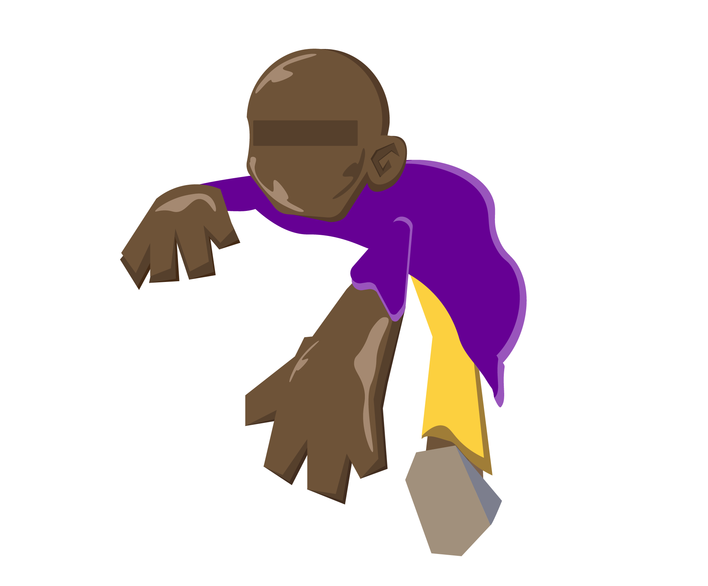

Alex
Vallauri
O Pai do Grafite Brasileiro
Etíope naturalizado brasileiro, Alex Vallauri revolucionou a arte urbana ao introduzir a técnica do stencil nas ruas de São Paulo no final dos anos 70. Suas obras icônicas como a "Rainha do Frango Assado" e "A Bota" marcaram para sempre a história do grafite nacional.
🎨 Stencil
